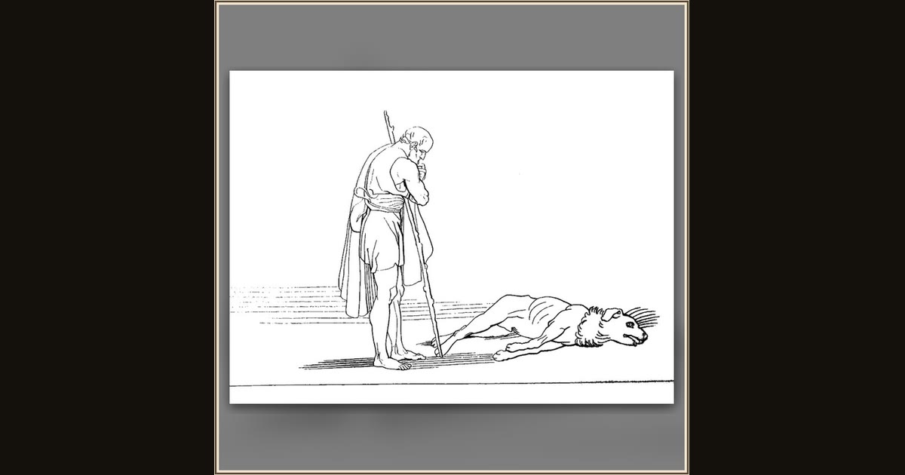

Ulysses and His Dog Argus (from The Odyssey of Homer)
After John Flaxman · after a design of 1793 · The Metropolitan Museum of Art · New York, USA
Odysseus’s old hunting dog Argus, left as a puppy twenty years before, lifts his head at the sound of his master and knows him even under the beggar’s rags. It is the last thing the faithful old hound ever does. John Flaxman drew the quiet, heartbreaking momen